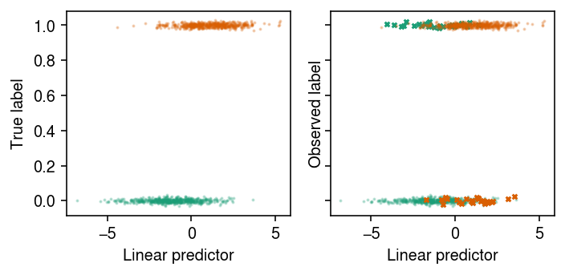

Logistic regression in the presence of error-prone labels
Table of Contents
Introduction
Logistic regression can be written (McCullagh and Nelder 1989) \( \DeclareMathOperator\Bern{Bernoulli} \DeclareMathOperator\E{E} \DeclareMathOperator\Exp{Exp} \DeclareMathOperator\KL{\mathcal{KL}} \DeclareMathOperator\N{\mathcal{N}} \DeclareMathOperator\S{sigmoid} \DeclareMathOperator\Unif{Uniform} \DeclareMathOperator\logit{logit} \newcommand\mi{\mathbf{I}} \newcommand\mx{\mathbf{X}} \newcommand\vb{\mathbf{b}} \newcommand\vtheta{\boldsymbol{\theta}} \newcommand\vx{\mathbf{x}} \newcommand\vy{\mathbf{y}} \)
\begin{align} y_i \mid p_i &\sim \Bern(p_i)\\ \logit(p_i) &\triangleq \eta_i = \vx_i' \vb, \end{align}where \(y_i \in \{0, 1\}\) denotes the label of observation \(i = 1, \ldots, n\), \(\vx_i\) denotes the \(p\)-dimensional feature vector for observation \(i\), and \(\vb\) is a \(p\)-dimensional vector of coefficients. In words, under this model the features \(x_{ij}\) (\(j = 1, \ldots, p\)) have linear effects \(b_j\) on the log odds ratio \(\eta_i\) of the label \(y_i\) equalling 1. One is primarily interested in estimating \(\vb\), in order to explain which features are important in determining the label \(y_i\), and to predict labels for future observations. Estimation can be done by a variety of approaches, such as maximizing the log likelihood
\begin{equation} \ell = \sum_i y_i \ln \S(\vx_i' \vb) + (1 - y_i) \ln \S(-\vx_i' \vb) \end{equation}with respect to \(\vb\), or by assuming a prior \(p(\vb)\) and estimating the posterior \(p(\vb \mid \mx, \vy)\) using MCMC or variational inference.
Remark. Note that the log likelihood equals the negative of the cross entropy loss.
A central assumption in using the model above to analyze data is that the labels \(y_i\) do not have errors. This is not a safe assumption to make in some settings, e.g., in associating genetic variants with diseases for which diagnosis is known to be imperfect (Shafquat et al. 2020). One approach to account for error-prone labels is to build a more complex model that relates the observed feature vectors \(\vx_i\), the true (unobserved) labels \(z_i\), and the observed labels \(y_i\)
\begin{align} y_i \mid z_i = 1, \theta_1 &\sim \Bern(1 - \theta_1)\\ y_i \mid z_i = 0, \theta_0 &\sim \Bern(\theta_0)\\ z_i \mid p_i &\sim \Bern(p_i)\\ \logit(p_i) &= \vx_i' \vb. \end{align}In this model, \(\vtheta = (\theta_0, \theta_1)\) denotes error probabilities. Specifically, \(\theta_1\) denotes the probability of observing label \(y_i = 0\) when the true label \(z_i = 1\), and \(\theta_0\) denotes the probability of observing \(y_i = 1\) when \(z_i = 0\). (One could simplify by fixing \(\theta_0 = \theta_1\), or potentially build more complex models where the error rates themselves depend on features in the data.)
Remark. This model is identifable up to a sign flip in \(\vb\) and corresponding “reflection” of \(\vtheta\) (to mean probability of observing the correct label). If one places a prior on \(\vtheta\) that does not have density \(> 0.5\), then the model is identifable.
As was the case for logistic regression without error-prone labels, one estimates \((\vb, \vtheta)\) from observed data by maximizing the log likelihood, or by assuming a prior \(p(\vb, \vtheta)\) and estimating the posterior \(p(\vb, \vtheta \mid \mx, \vy)\). However, unlike the simpler model, one can use these estimates to infer the true labels (and thus identify mislabelled data points) from the data, e.g., by estimating \(p(z_i = 1 \mid \mx, \vy)\).
Setup
import numpy as np import pandas as pd import pyro import scipy.linalg as sl import scipy.special as sp import scipy.stats as st import sklearn.linear_model as sklm import sklearn.metrics as skm import sklearn.model_selection as skms import sklearn.utils as sku import torch
%matplotlib inline %config InlineBackend.figure_formats = set(['retina'])
import matplotlib.pyplot as plt plt.rcParams['figure.facecolor'] = 'w' plt.rcParams['font.family'] = 'Nimbus Sans'
Methods
Maximum likelihood estimation
One can use an EM algorithm to maximize the log likelihood (Ekholm and Palmgren 1982, Magder and Hughes 1997)
\begin{equation} \ell = \sum_i \ln \left(\sum_{z_i \in \{0, 1\}} p(y_i \mid z_i, \vtheta)\, p(z_i \mid \vx_i, \vb)\right) \end{equation}with respect to \((\vb, \vtheta)\).
Remark. In the case where \(p > n\), one can add an \(\ell_1\) and/or \(\ell_2\) penalty on \(\vb\) to the log likelihood to regularize the problem, and modify the M-step update appropriately.
We briefly outline the derivation of the algorithm. The joint probability
\begin{multline} \ln p(y_i, z_i \mid \vx_i, \vb, \vtheta) = [z_i = 1]\underbrace{\left(y_i \ln (1 - \theta_1) + (1 - y_i)\ln \theta_1 + \ln \S(\vx_i' \vb)\right)}_{\triangleq \alpha_i}\\ + [z_i = 0]\underbrace{\left(y_i \ln \theta_0 + (1 - y_i) \ln (1 - \theta_0) + \ln \S(-\vx_i' \vb)\right)}_{\triangleq \beta_i}, \end{multline}where \([\cdot]\) denotes the Iverson bracket. The posterior
\begin{equation} p(z_i = 1 \mid \vx_i, y_i, \vb, \vtheta) \triangleq \phi_i = \frac{\exp(\alpha_i)}{\exp(\alpha_i) + \exp(\beta_i)}, \end{equation}and the expected log joint probability with respect to the posterior is
\begin{multline} h = \sum_i \Big(\phi_i \left(y_i \ln (1 - \theta_1) + (1 - y_i)\ln \theta_1 + \ln \S(\vx_i' \vb)\right)\\ + (1 - \phi_i) \left(y_i \ln \theta_0 + (1 - y_i) \ln (1 - \theta_0) + \ln \S(-\vx_i' \vb)\right) \Big). \end{multline}The EM algorithm maximizes \(h\) by alternating E-steps and M-steps, which is equivalent to maximizing \(\ell\) (Neal and Hinton 1998). In the E-step, one updates \(\phi_i\) as described above. In the M-step, one updates
\begin{align} \logit(\theta_1) &:= \ln\left(\frac{\sum_i \phi_i (1 - y_i)}{\sum_i \phi_i y_i}\right)\\ \logit(\theta_0) &:= \ln\left(\frac{\sum_i (1 - \phi_i) y_i}{\sum_i (1 - \phi_i) (1 - y_i)}\right), \end{align}and updates \(\vb\) by maximizing the expected log joint probability. Considering only terms of \(h\) that depend on \(\vb\), the objective function is
\begin{equation} \sum_i \phi_i \ln \S(\vx_i' \vb) + (1 - \phi_i) \ln \S(-\vx_i' \vb) \end{equation}which is the negative cross entropy loss with labels \(\phi_i\). Therefore, \(\vb\) can be estimated by logistic regression as a subroutine.
Remark. In the case that one penalizes the log likelihood, the penalty terms only enter the M step in the updates to \(\vb\). In this case, the M step update to \(\vb\) involves a penalized logistic regression, which is available in standard packages.
One iterates the E and M steps alternately until e.g., the change in objective falls below some threshold. Intuitively, this algorithm alternates between estimating the true labels given the current estimates of the regression coefficients and error rates (E step), and estimating the regression coefficients and error rates given the current estimates of the true labels (M step). Crucially, all of the data is used to estimate the regression coefficients and error rates, which makes it possible to detect that an observed label is unlikely given the observed features and estimated error rates, by borrowing information from the other observations. From the estimated \(\hat{\vb}\), one can predict the true label \(\tilde{z}\) for a new observation \((\tilde{\vx}, \tilde{y})\) as
\begin{equation} \E[\tilde{z}_i] = \S(\tilde{\vx}' \hat{\vb}). \end{equation}def logistic_regression_errors_em(x, y, b=None, logits=None, atol=1e-5, max_epochs=100, update_logits=True, verbose=True, **kwargs): """Fit logistic regression with error-prone labels by maximum likelihood x - features, array-like (n, p) y - labels, array-like (n, 1) b - initial value for coefficients, array-like (p, 1) logits - initial value for error logits, array-like (2, 1) atol - tolerance for convergence (> 0) max_epochs - maximum number of EM iterations (> 0) update_logits - update initial estimates of error logits verbose - print EM updates kwargs - keyword arguments to logistic regression subroutine """ # TODO: this needs lots more error checking of args if logits is None: logits = np.array([-7, -7], dtype=np.float) if b is None: b = np.zeros((x.shape[1], 1)) z = _logistic_regression_errors_update_z(x, y, b, logits) obj = _logistic_regression_errors_obj(x, y, z, b, logits) if verbose: print(f'{0:>8d} {obj:.10g}') for i in range(max_epochs): if update_logits: # eq. 12-14 logits[0] = np.log(((1 - z) * y).sum() / ((1 - z) * (1 - y)).sum()) logits[1] = np.log((z * (1 - y)).sum() / (z * y).sum()) theta = sp.expit(logits) # Important: the sklearn solver approximately maximizes the objective, # which leads to weird issues b = _logistic_regression_irls(x, z) z = _logistic_regression_errors_update_z(x, y, b, logits) update = _logistic_regression_errors_obj(x, y, z, b, logits) if verbose: print(f'{i + 1:>8d} {update:.10g}') if not np.isfinite(update): raise RuntimeError('invalid objective function value') elif abs(update - obj) < atol: return b, logits else: obj = update else: raise RuntimeError('failed to converge in max_epochs') def _logistic_regression_errors_obj_comp(x, y, b, logits): """Return 'mixture components' of the log joint probability""" theta = sp.expit(logits) alpha = (y * np.log(1 - theta[1]) + (1 - y) * np.log(theta[1]) + np.log(sp.expit(x @ b))) beta = (y * np.log(theta[0]) + (1 - y) * np.log(1 - theta[0]) + np.log(sp.expit(-x @ b))) return alpha, beta def _logistic_regression_errors_update_z(x, y, b, logits): """Return new value of E[z]""" alpha, beta = _logistic_regression_errors_obj_comp(x, y, b, logits) z = sp.softmax(np.hstack([alpha, beta]), axis=1)[:,0].reshape(-1, 1) assert z.shape == alpha.shape return z def _logistic_regression_errors_obj(x, y, z, b, logits): """Return expected log joint probability""" alpha, beta = _logistic_regression_errors_obj_comp(x, y, b, logits) obj = (z * alpha + (1 - z) * beta).sum() return obj def _logistic_regression_irls(x, y, b=None, tol=1e-7, max_epochs=1000): """Fit logistic regression by iterative reweighted least squares""" mu = np.log(y.mean() / (1 - y.mean())) if b is None: b = np.zeros((x.shape[1], 1)) llik = -np.inf for i in range(max_epochs): eta = mu + x @ b mu = sp.expit(eta) w = mu * (1 - mu) z = eta + (y - mu) / w b = sl.solve(x.T @ np.diag(w.ravel()) @ x, x.T @ np.diag(w.ravel()) @ z) update = (y * np.log(sp.expit(x @ b)) + (1 - y) * np.log(sp.expit(-x @ b))).sum() if abs(update - llik) < tol: return b else: llik = update else: raise RuntimeError('failed to converge in max_epochs')
Approximate Bayesian inference
If one assumes a prior \(p(\vb, \vtheta)\), then one can estimate the posterior
\begin{equation} p(\vb, \vtheta \mid \mx, \vy) = \frac{\sum_i \sum_{z_i \in \{0, 1\}} p(y_i \mid z_i, \vtheta) p(z_i \mid \vx_i, \vb) p(\vb, \vtheta)}{\int \sum_i \sum_{z_i \in \{0, 1\}} p(y_i \mid z_i, \vtheta) p(z_i \mid \vx_i, \vb)\, dp(\vb, \vtheta)}. \end{equation}The integral in the denominator is intractable; however, approximate inference via MCMC can be readily implemented in inference engines such as Stan, pyro, or Tensorflow Probability. One could alternatively use variational inference to find the best approximate posterior in a tractable family, by minimizing the KL divergence between the approximate posterior and the true posterior. From the estimated posterior, one can estimate the posterior distribution of the true label \(\tilde{z}\) for a new data point \((\tilde{\vx}, \tilde{y})\), given the observed (training) data, as
\begin{equation} p(\tilde{z} \mid \tilde{\vx}, \tilde{y}, \mx, \vy) = \int p(\tilde{y} \mid \tilde{z}, \vtheta)\, p(\tilde{z} \mid \tilde{\vx}, \vb)\, dp(\vb, \vtheta \mid \mx, \vy). \end{equation}The primary derived quantity of interest for prediction is the posterior mean \(\E[\tilde{z} \mid \tilde{\vx}, \tilde{y}]\). For simplicity, assume proper priors
\begin{align} \theta_k &\sim \Unif(0, 0.5)\\ \vb &\sim \N(\boldsymbol{0}, \lambda \mi)\\ \lambda &\sim \Exp(1). \end{align}def logistic_regression_errors_nuts(x, y, num_samples=100, warmup_steps=100, verbose=True): """Fit logistic regression with error-prone labels using No U-Turn Sampler x - features, array-like (n, p) y - labels, array-like (n, 1) num_samples - number of posterior samples to return warmup_steps - number of initial posterior samples (not returned) verbose - report progress """ nuts = pyro.infer.mcmc.NUTS(_logistic_regression_errors) samples = pyro.infer.mcmc.MCMC(nuts, num_samples=num_samples, warmup_steps=warmup_steps) samples.run(torch.tensor(x, dtype=torch.float), torch.tensor(y.ravel(), dtype=torch.float)) return samples def _logistic_regression_errors(x, y): """Return stochastic computation graph for the generative model""" theta = pyro.sample('theta', pyro.distributions.Uniform( low=torch.zeros(2), high=0.5 * torch.ones(2))) lam = pyro.sample('lam', pyro.distributions.Exponential(rate=1.)) b = pyro.sample('b', pyro.distributions.MultivariateNormal( loc=torch.zeros(x.shape[1]), covariance_matrix=lam * torch.eye(x.shape[1]))) eta = x @ b with pyro.plate('data', x.shape[0]): probs = (1 - theta[1]) * torch.sigmoid(eta) + theta[0] * torch.sigmoid(-eta) y = pyro.sample('y', pyro.distributions.Bernoulli(probs=probs), obs=y) return y
Results
Simulation
def simulate(n, p, n_causal, theta0, theta1, seed=0): rng = np.random.default_rng(seed) x = rng.normal(size=(n, p)) b = np.zeros((p, 1)) b[:n_causal] = rng.normal(size=(n_causal, 1)) z = rng.uniform(size=(n, 1)) < sp.expit(x @ b) u = rng.uniform(size=(n, 1)) y = np.where(z, u < (1 - theta1), u < theta0) return x, y, z, b
x, y, z, b = simulate(n=1000, p=10, n_causal=3, theta0=0.05, theta1=0.05)
cm = plt.get_cmap('Dark2') plt.clf() fig, ax = plt.subplots(1, 2, sharey=True) fig.set_size_inches(5, 2.5) eta = x @ b for k in range(2): jitter = np.random.normal(scale=0.01, size=(z == k).sum()) ax[0].scatter(eta[z == k], jitter + z[z == k], s=1, c=cm(k), alpha=0.25) ax[1].scatter(eta[(z == k) & (y == z)], jitter[(y == z)[z == k]] + y[(z == k) & (y == z)], s=1, c=cm(k), alpha=0.25) ax[1].scatter(eta[(z == k) & (y != z)], jitter[(y != z)[z == k]] + y[(z == k) & (y != z)], s=8, marker='x', c=cm(k), alpha=1) for a in ax: a.set_xlabel('Linear predictor') ax[0].set_ylabel('True label') ax[1].set_ylabel('Observed label') plt.tight_layout()

xt, xv, yt, yv, zt, zv = skms.train_test_split(x, y, z, test_size=0.1)
Naive analysis
Fit logistic regression to predict the observed labels from the features, and report the accuracy in the validation data.
fit0 = _logistic_regression_irls(xt, yt) pv = sp.expit(xv @ fit0) pd.Series({ 'observed': skm.roc_auc_score(yv, pv), 'true': skm.roc_auc_score(zv, pv)}, name='roc_auc')
observed 0.852525 true 0.909675 Name: roc_auc, dtype: float64
Maximum likelihood estimation
Fit the model to the simulated data by maximizing the (unpenalized) likelihood. First, initialize at the oracle values, fix the error rates, and report the accuracy in the validation data.
oracle_fit_em = logistic_regression_errors_em( xt, yt, b=b, logits=sp.logit([0.05, 0.05]), update_logits=False, tol=1e-7, max_epochs=1000) pv = sp.expit(xv @ oracle_fit_em[0]) pd.Series({ 'observed': skm.roc_auc_score(yv, pv), 'true': skm.roc_auc_score(zv, pv)}, name='roc_auc')
observed 0.856970 true 0.912485 Name: roc_auc, dtype: float64
Report the accuracy of predicting the mislabeled data points in the validation data.
skm.roc_auc_score(yv != zv, np.where(yv, 1 - pv, pv))
0.9219858156028369
Now repeat the analysis, updating the error rates.
oracle_fit_em = logistic_regression_errors_em( xt, yt, b=b, logits=sp.logit([0.05, 0.05]), tol=1e-7, max_epochs=1000) pv = sp.expit(xv @ oracle_fit_em[0]) pd.Series({ 'observed': skm.roc_auc_score(yv, pv), 'true': skm.roc_auc_score(zv, pv)}, name='roc_auc')
observed 0.854141 true 0.911281 Name: roc_auc, dtype: float64
Report the accuracy of predicting the mislabeled data points in the validation data.
skm.roc_auc_score(yv != zv, np.where(yv, 1 - pv, pv))
0.927304964539007
Now, repeat the analysis, but initialize \(\vb\) at the naive solution, and initialize \(\vtheta\) at the default \(\logit(-7) = 10^{-3}\).
fit_em = logistic_regression_errors_em(xt, yt, b=fit0, tol=1e-7, max_epochs=1000, verbose=True) pv = sp.expit(xv @ fit_em[0]) pd.Series({ 'observed': skm.roc_auc_score(yv, pv), 'true': skm.roc_auc_score(zv, pv)}, name='roc_auc')
observed 0.854141 true 0.911281 Name: roc_auc, dtype: float64
Report the point estimates of the error rates.
sp.expit(fit_em[1])
array([1.38606116e-02, 1.94704025e-10])
Report the accuracy of predicting the mislabeled data points in the validation data.
skm.roc_auc_score(yv != zv, np.where(yv, 1 - pv, pv))
0.927304964539007
Approximate Bayesian inference
Sample from the posterior (1.5 minutes).
torch.manual_seed(1)
samples = logistic_regression_errors_nuts(xt, yt, num_samples=2000, warmup_steps=1000)
Report the 95% credible intervals for the error rates.
pd.DataFrame(np.percentile(samples.get_samples()['theta'], [2.5, 97.5], axis=0).T)
0 1 0 0.044269 0.161897 1 0.015789 0.155854
Report the AUROC of predicting the true labels in the training data.
xs = torch.tensor(xt, dtype=torch.float) ys = torch.tensor(yt, dtype=torch.float) pt = np.stack([(((1 - tt[1]) ** ys * tt[1] ** (1 - ys)).ravel() * torch.sigmoid(xs @ bt)).numpy() for tt, bt in zip(samples.get_samples()['theta'], samples.get_samples()['b'])]).mean(axis=0) skm.roc_auc_score(zt, pt)
0.9751495423583979
Report the AUROC of predicting the true labels in the validation data.
xs = torch.tensor(xv, dtype=torch.float) ys = torch.tensor(yv, dtype=torch.float) pv = np.stack([(((1 - tt[1]) ** ys * tt[1] ** (1 - ys)).ravel() * torch.sigmoid(xs @ bt)).numpy() for tt, bt in zip(samples.get_samples()['theta'], samples.get_samples()['b'])]).mean(axis=0) skm.roc_auc_score(zv, pv)
0.984
Report the accuracy of predicting the mislabeled data points in the validation data.
skm.roc_auc_score(yv != zv, np.where(yv.ravel(), 1 - pv, pv))
0.7057387057387057
Related work
- Tenenbein, A. (1970). A double sampling scheme for estimating from binomial data with misclassifications. J. Am. Statist. Assoc. 65. 1350-1361.
- Hochberg, Y. (1977). On the use of double sampling schemes in analyzing categorical data with misclassification errors. J. Am. Statist. Assoc. 72. 914-921
- Chen, T.T. (1979). Log-linear models for categorical data with misclassification and double sampling. J. Am. Statist. Assoc. 74. 481-488.
- Ekholm, A., & Palmgren, J. (1982). A Model for a Binary Response with Misclassifications. Lecture Notes in Statistics, 128–143. https://doi.org/10.1007/978-1-4612-5771-4_13
- Espeland, M.A. and Odoroff, C.L. (1985). Log-linear models for doubly sampled categorical data fitted by the EM algorithm. J. Am. Statist. Assoc. 80. 663-670
- Espeland, M.A. and Hui, S.L. (1987). A general approach to analyzing epidemiologic data that contain misclassification errors. Biometrics 43. 1001-1012
- Palmgren, J. and Ekholm, A. (1987), Exponential family non-linear models for categorical data with errors of observation. Appl. Stochastic Models Data Anal., 3: 111-124. https://doi.org/10.1002/asm.3150030206
- Zhi Geng & Chooichiro Asano. (1989) Bayesian estimation methods for categorical data with misclassifications, Communications in Statistics - Theory and Methods, 18:8, 2935-2954. https://doi.org/10.1080/03610928908830069
- Evans, M., Guttman, I., Haitovsky, Y., and Swartz, T. (1996). Bayesian analysis of binary data subject to misclassification. In Bayesian Analysis in Statistics and Econometrics: Essays in Honor of Arnold Zellner, D. Berry, K. Chaloner, and J. Geweke (eds), 67–77. New York: North Holland.
- Mendoza-Blanco, J. R., Tu, X. M., and Iyengar, S. (1996). Bayesian inference on prevalence using a missing-data approach with simulation-based techniques: Applications to HIV screening. Statistics in Medicine 15, 2161–2176.
- Magder LS, Hughes JP. Logistic regression when the outcome is measured with uncertainty. Am J Epidemiol. 1997;146(2):195–203.
- Rekaya, R., Weigel, K. A., and Gianola, D. (2001). Threshold model for misclassified binary responses with applications to animal breeding. Biometrics 57, 1123–1129.
- Paulino, C.D., Soares, P. and Neuhaus, J. (2003), Binomial Regression with Misclassification. Biometrics, 59: 670-675. https://doi.org/10.1111/1541-0420.00077
- Duffy SW, Warwick J, Williams AR, Keshavarz H, Kaffashian F, Rohan TE, Nili F, Sadeghi-Hassanabadi A. A simple model for potential use with a misclassified binary outcome in epidemiology. J Epidemiol Community Health. 2004;58(8):712–7.
- Prescott GJ, Garthwaite PH. A Bayesian approach to prospective binary outcome studies with misclassification in a binary risk factor. Stat Med. 2005;24(22):3463–77.
- Hofler M. The effect of misclassification on the estimation of association: a review. Int J Methods Psychiatr Res. 2005;14(2):92–101.
- Smith, S., Hay, E.H., Farhat, N. et al. Genome wide association studies in presence of misclassified binary responses. BMC Genet 14, 124 (2013). https://doi.org/10.1186/1471-2156-14-124
- Rekaya R, Smith S, Hay el H, Aggrey SE. Misclassification in binary responses and effect on genome-wide association studies. Poult Sci 2013;92(9):2535–2540.